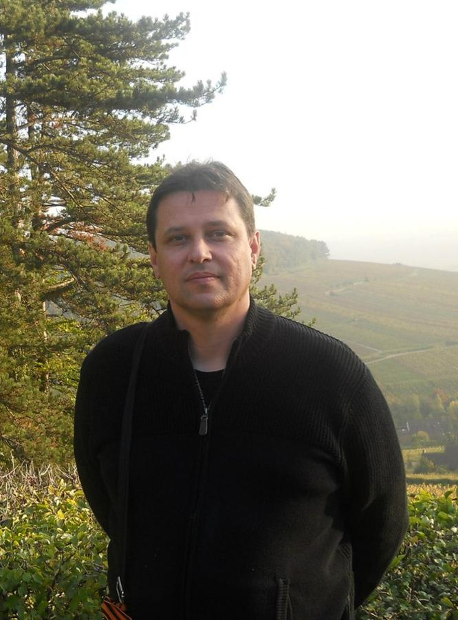
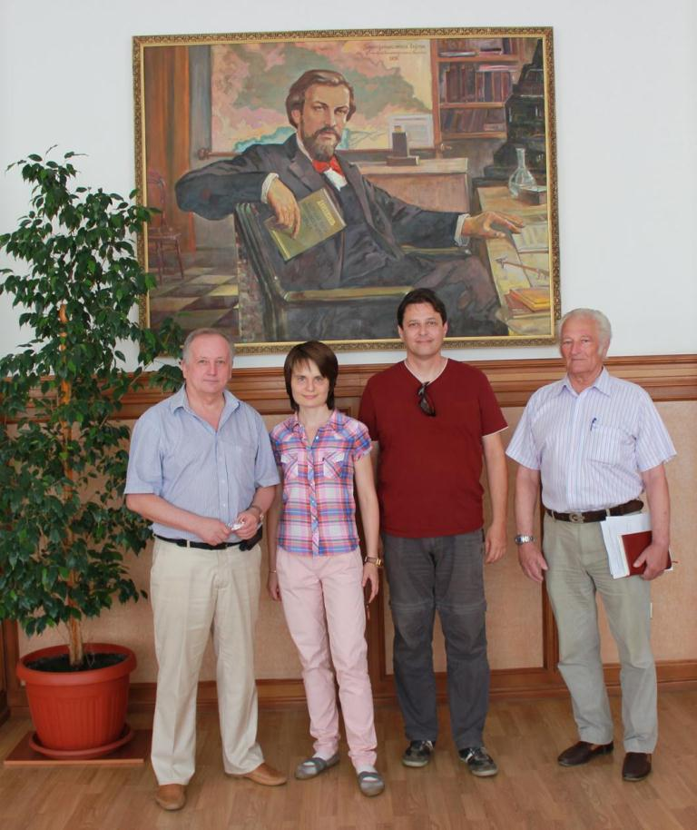
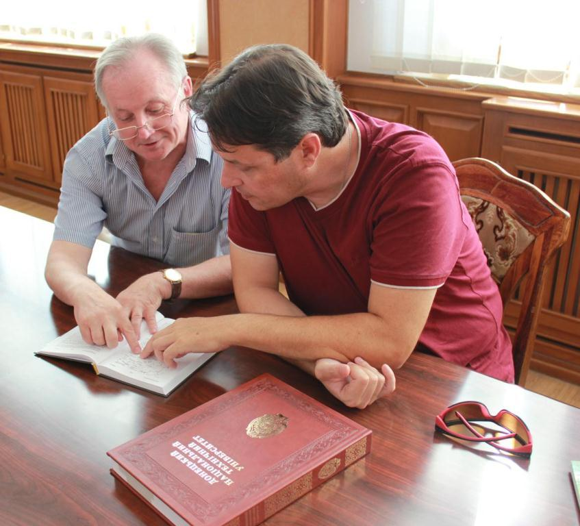

Au sein de l’Université Nationale Technique de Donetsk s’est tenue, le 30 juillet 2015, la rencontre avec le journaliste, écrivain et historien, Monsieur Laurent BRAYARD.
Les possibilités de la coopération éventuelle dans le cadre des projets culturels francophones ont été discutées.
M. BRAYARD a aimablement répondu à quelques questions de notre journal « Sans Frontières ».
- Présentez-vous, s’il vous plaît.
- Je m’appelle Laurent Brayard, je suis journaliste, écrivain, historien, russophile et russophone (il reste du chemin à faire !), j’ai vécu quatre années en Russie et vécu quelques expériences dans les pays de l’Est, surtout en Hongrie, Ukraine, Moldavie, Russie et désormais dans le Donbass.
- Quelles étaient vos activités en France ?
- (Rires), multiples, j’ai longtemps été vigneron et caviste en Bourgogne pendant dix années. Mes origines sont donc profondément enracinées à la Terre, celles des paysans qui furent d’ailleurs notamment du côté paternel (en Bresse) mes ancêtres. Par la suite j’ai entamé un cursus universitaire supérieur par correspondance en continuant de travailler mais dans l’Education nationale comme Maître d’Internat. Cela m’a conduit jusqu’à un Master II en histoire contemporaine et j’ai défendu en septembre 2010 mon mémoire sur les Levées d’hommes pendant la Révolution, volontaires nationaux et réquisitionnaires, désertions et résistances 1791-1795 dans le District de Pont-de-Vaux (Ain).
- Expliquez, s’il vous plaît, votre intérêt à la culture russe.
- Depuis l’adolescence, un intérêt d’abord pour son histoire, la lecture de quelques grandes œuvres de la littérature russe. Grand joueur de jeux de rôle, mes personnages joués portaient souvent des noms à consonance slave, mais cet intérêt s’étendait aussi à tous les pays de l’Europe centrale et de l’Est, notamment et surtout la Pologne, la Serbie et la Hongrie. Ensuite cet intérêt s’est endormi jusqu’à que je recommence à voyager en 2009, par des séjours en Ukraine, Moldavie et Russie. C’est dans ce dernier pays que je suis tombé amoureux… d’une russe. Puis à travers elle, de votre culture, littérature, histoire et de votre langue, il n’en fallait pas beaucoup pour me convaincre cependant ! Après je suis également tombé sous le charme de la Russie, ce pays c’est maintenant aussi chez moi.
- Quel était votre parcours professionnel en Russie ?
- J’ai d’abord étudié à l’Institut d’Etat de langue russe, l’Institut Pouchkine à Moscou pendant un an et demi. Puis à ma sortie en décembre 2011, j’ai trouvé du travail dans le grand média public russe qui s’appelait alors La Voix de la Russie, anciennement Radio Moscou. J’y ai travaillé jusqu’en août 2013 date à laquelle j’ai eu un très grave accident. Il est heureux que je sois avec vous en ce jour. Ensuite j’ai travaillé pour le cinéma russe pour le film Vassenin dirigé par Andreï Grigoriev de Ekaterinbourg dans l’Oural (où je me suis rendu plusieurs fois). Enfin, j’ai aussi travaillé comme guide pour des Français à Moscou ou encore comme professeur de français ou de dégustation… de vins pour les Russophones.
- Autant que je sache, vous avez fait pris une grande part à la réalisation du film Vassenin. Une histoire très touchante d’un soldat soviétique ayant lutté du côté de la Résistance française. Comment en avez-vous fait sa connaissance ? Qu'est-ce que signifie pour vous cette histoire ?
- Il me faudrait un livre pour vous raconter cette histoire incroyable qui a débaroulée dans ma vie un jour de novembre 2012 par étapes successives. Tout a commencé avec ma participation à la délégation russe pour la candidature de la ville d’Ekaterinbourg à l’exposition universelle de 2020. De là j’ai reçu la mission du gouverneur de l’Oblast de Sverdlovsk de retrouver un amour de jeunesse du vétéran Nicolaï Vassenin qui était encore en vie et âgé de 94 ans. J’ai pu retrouver cette femme, Jeanne, mais cet amour reste une énigme, il est probable qu’il fut à sens unique, Jeanne très malade (90 ans) ne pouvait corroborer les dires du vieux monsieur et j’ai décidé à la demande de la famille de ne plus communiquer sur cette histoire qui pourtant à fait une traînée de poudre dans le monde entier, particulièrement en Russie et en moindre mesure en France. Sans doute pour répondre à la deuxième question, une des plus belles et extraordinaire expérience de ma vie. J’ai rencontré ce grand Monsieur la première fois seulement en janvier 2014, puis je l’ai conduit avec Andreï en France sur ces lieux de combats dans la Drôme au mois de juin. Il est mort le 7 décembre 2014 à 96 ans après avoir achevé le cercle. Cette histoire pour moi, c’est un pont entre la France et la Russie, une histoire de valeurs, de bravoure, une personnalité exceptionnelle, il a été un peu comme mon deuxième grand-père et ce fut un grand honneur de servir l’histoire à travers lui et d’honorer encore sa mémoire, les héros ne meurent jamais.
- Quelles étaient vos motivations de visiter Donetsk pour la première fois et quelles étaient vos impressions ?
 Alexandre ANOPRIENKO, Hélène SYDOROVA, Laurent BRAYARD, Guennady KLIAGUINE- Savoir ! Je savais déjà mais en venant ici je pouvais ré informer mes compatriotes totalement lessivés par une infâme propagande. J’ai acquis ainsi une légitimité qui me permet sans peur de lancer la vérité à la face de nos politiciens et journalistes, si tant est qu’il reste plus de quelques dizaines de journalistes encore debout en France ! Venir c’était un devoir, ce que j’ai vu et entendu était terrible, alors j’ai décidé de revenir… pour un an et de vivre avec vous, une solidarité réelle en espérant être utile par ma plume au peuple du Donbass traîné dans la boue en Europe. Je suis en tant qu’historien de la Révolution épris de libertés, mon exemple que je cite sans cesse est Camille Desmoulins, petit j’admirais les hommes qui dans le roman de Victor Hugo défendaient la barricade avec Gavroche et Jean Valjean. Je n’ai jamais perdu cet esprit-là. Ici vit la vraie France.
- Comment pouvez-vous expliquer la situation actuelle en France du point de vue politique, économique et sociale ?
- Cauchemardesque, mais les Français n’ont pas encore compris, du moins pas assez d’entre eux. La France est aujourd’hui entre les mains de l’Union européenne et assujettie de plus en plus à ses « alliés » d’Outre-Atlantique ou d’Outre-Rhin. La Voie française a été abandonnée, nos politiciens ne servent plus ni la France, encore moins le Peuple, nous avons renoncé et l’esprit français de capitulation qui était celui de 1940 est plus profondément ancré encore, il y a cependant de l’espoir, il y a malgré les importantes pertes de liberté et la situation économique catastrophique, sans parler du fossé social abyssal qui divise profondément les Français, il y a de l’espoir, la Résistance est là, la dissidence monte, nous marcherons un jour à nouveau sur les pas de nos ancêtres. Reste à savoir quand ?
- On imagine, vous êtes devenu Président de la France, quelles seraient vos démarches principales ?
 Alexandre ANOPRIENKO et Laurent BRAYARD- Je fonderais la République ! Elle n’a jamais finalement été fondée dans l’acceptation pleine et entière des idéaux de la Déclaration des Droits de l’Homme de 1789. Aujourd’hui nous sommes sous un régime présidentiel qui menace la Nation en profondeur sur tous les plans et dirigé par une oligarchie n’ayant rien à envier à la Haute-Noblesse de l’Ancien régime. Si elle ne réagit pas la France est perdue, peu importe d’ailleurs le président. Je pense d’ailleurs que la France n’a pas besoin de président, le pouvoir d’un seul homme a toujours été une hérésie, j’abolirais donc mon propre poste si nous supposons que je sois devenu Président… des Français, car je crois à une autre forme de démocratie, celle du Peuple, le Peuple souverain, à l’heure actuelle il n’existe pas au sens propre du mot de véritable démocratie en France, beaucoup de Français le croient hélas.
- Actuellement, quels sont les objectifs de votre mission à Donetsk ?
- Travailler pour le média public de la République de Donetsk, Novorossia.Today et TV, écrire, publier, photographier, filmer, ré informer, bref le vrai travail de journaliste, ensuite autant que faire se pourra participer à l’organisation de projets humanitaires, universitaires ou civils pour aider le Donbass dans le présent et le futur.
- En quelques mots, comment pouvez-vous décrire Donetsk ?
Je connais encore mal votre ville, au premier regard, une ville verte, travailleuse, courageuse, debout, un endroit qui malgré la guerre me fait dire qu’ici tout sera possible dans l’avenir, Donetsk est un symbole, elle le restera désormais devant l’histoire.
Partager cette page